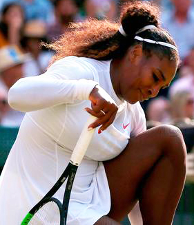
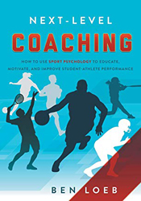

Emotional and Mental Pitfalls¶
Emotional and Mental Pitfalls¶
Ben Loeb¶

How can you as a player or a coach work to overcome emotional obstacles faced in competitive matches?
In my last article in this new series for Tennisplayer, we looked at techniques for developing confidence. (link) Now let's look at some of the pitfalls many players encounter and must strive to overcome in that pursuit.
Learned Helplessness
The first pitfall is learned helplessness. Learned helplessness is the belief that you can't change the course of negative events--that failure is inevitable and insurmountable. This is an ego protection mechanism.
When an athlete sees himself as victimized by the circumstances, he performs as if he were helpless. The belief is that failure is beyond the athlete's control, and nothing can be done about it. These players tend to have lower expectations and give less effort.
They may blame referees or umpires for their mistakes, or the wind, the heat, or the cold. They may exaggerate hurts and pains to have an excuse in case they don't win. Learned helplessness can also include the belief that opponents always get lucky breaks.
These players are challenge avoiders. Challenge avoiders feel pushed around and that they have reduced or no influence on the outcome of their matches. If they feel the opponent has more ability, they feel helpless to win.
To change this constellation of beliefs players must make a choice to accept and embrace their circumstances. This has to be a conscious choice based on self-awareness of what is holding them back.
They must choose to become challenge seekers. Challenge seekers choose to believe they're in control of their own fate. They feel they have influence on an outcome even if they cannot control it. When circumstances that affect their performance arise, they need to react to that challenge.

Fear of failure can damage self-esteem.
Fear of Failure
A second obstacle faced by many players is fear of failure. These athletes fear defeat may damage their self-esteem. This fear is the most common motivational obstacle I see in players.
Most athletes have experienced fear of failure at one time or another. Even the best in their sport have had doubts. Pros like Serena Williams in tennis, LeBron James in basketball, Tom Brady in football, or Bryce Harper in baseball have all battled doubt at times when the threat of failure loomed.
The fear of failure is a preoccupation with the perceived consequences of losing. It's not being able to get your mind off how terrible it will feel if you lose. Typically, this leads to a lot of anxiety over outcome before and during the event.
Athletes with a fear of failure feel that winning and losing define who they are as a person. There are many highs and lows in competitive athletics. Consequently, there are athletes who see losing or failing as a permanent negative trait.
If they fear failure, get nervous and lose, they may see themselves as losers in sport and also in life. If this happens with any degree of regularity, then the likelihood of them feeling that way increases, while other athletes may see the setback as temporary.
There are 3 strategies athletes can use to tum their fear of failure into a challenge if they are willing to embrace them.
-
First, separate your identity from your performance.
-
Second, focus on the things you can control.
-
Third, set performance goals to move beyond fear of failure.

Most athletes in all sports have struggled with doubt and fear of failure.
Fear of Success
The third obstacle is the opposite of the fear of failure---the fear of success. When an athlete becomes fearful of higher expectations, they fear success. Fear of success holds people back from achieving their goals.
There are more people than one might think who are uncomfortable with winning in sport or in life. They become preoccupied with the negative aspects of winning.
Over several decades of coaching high school tennis, I have seen some players who are more comfortable playing a lower position on the team. It seems as if they get a nose bleed from the high altitude of playing a top position.
They may fear that if they play at the top of the lineup, there will be higher expectations of them and the opponents will be harder to beat. If the athlete fears they cannot handle it, they may back off from going all in to play a top position.
The solution? Focus on maximizing your own potential than \"winning\" itself. See yourself as a successful person if you gave your best and competed hard throughout. Separate \"self-worth\" from the outcome.
You should still see yourself as worthy whether you win or lose. Be willing to emotionally risk going to a higher level of expectation to explore the unknown. This is a way of life for those with a \"winning\" attitude.
Perfectionism
The fourth obstacle is perfectionism. Ever met someone obsessed with perfection? They are never satisfied. An example is a player who over trains and feels guilty when he or she takes any time off.
Perfectionists are intolerant of their own mistakes. Some sports encourage perfectionism by nature. Sports like gymnastics, figure skating, diving, or cheerleading are geared toward striving for perfect scores. Some of these athletes are never satisfied, because it's nearly impossible to be perfect.

Some sports require perfection to succeed---but not tennis.
In tennis perfectionism can be equally deadly for a different reason. In a close match, no matter the final outcome you are likely to lose roughly as many points as you win.
Failure to be perfect can result in burnout or a drop in motivation to achieve. According to Randy Frost, a leading researcher on perfection, \"Striving for perfection is fine. The issue is how you interpret your own inevitable mistakes and failings. Do they make you feel bad about yourself in a global sense?\"
To avoid the drawbacks of perfectionism, remember the following points.
-
Mistakes are part of the game and part of the process.
-
How you deal with mistakes is critical to how much stress you incur and how much enjoyment you experience.
-
It's okay to strive for personal excellence but realize that you will be imperfect along the way.

Ben Loeb has been the varsity tennis coach for the boys' and girls' teams at Rock Bridge High School in Columbia, Missouri for over 30 years. His teams have won more than 1000 dual matches, made 38 appearances in the final four of the state team championships, and won 17 state titles. Been also teaches a high school sports psychology class and has used the principles he has developed to help hundreds of players to overcome the mental and emotional challenges of playing winning competitive tennis.

Next-Level Coaching!
Ben's new book, Next-Level Coaching, outlines the principles he has developed over his career as a player and a championship coach to help overcome the mental and emotional challenges of playing and enjoying competitive tennis. It includes detailed self-assessment questionnaires and plans of action to help any player our coach use sports psychology to reach the next level.
To Order Next-Level Coaching, !